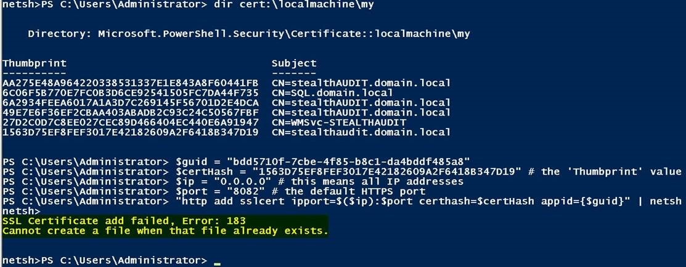

Summary: You have a need to add a new certificate for StealthAUDIT web reports (to utilize HTTPS) but you already have one in place. When you try to add a new cert you get an error that the certificate add failed.
Issue:
When creating or issued a new certificate to use with StealthAUDIT web reports you
may show errors when trying to bind it to the web reports port with the error:
"SSL Certificate add failed, error: 183
Cannot create a file when that file already exists."

Instructions:
The way to resolve this issue is to clear out the current certificate from the port
before you add the new one. Use this powershell command to clear it out:
netsh http
delete sslcert
ipport=0.0.0.0:8082
*Please note that this command assumes that you are using the port 8082 for your
StealthAUDIT web reports. In your environment it may be different.
Once this is done, you can use the new cert hash from the new cert and put it into
below powershell commands to bind it to the port. Use the thumbprint value from the
desired cert - use the PowerShell command:
dir cert:\localmachine\my
to list it, then put the value into the $certHash variable below. Make sure not to
use the $guid variable by accident.
$guid =
"bdd5710f-7cbe-4f85-b8c1-da4bddf485a8"
$certHash =
"80F78FD2566793D2F39E748CDF6DED09B6F57A82"
# the 'Thumbprint' value
$ip =
"0.0.0.0"
# this means all IP addresses
$port =
"8082"
# the default HTTPS port
#build command and pipe to the netsh command
"http add sslcert ipport=$($ip):$port certhash=$certHash appid={$guid}" |
netsh
You should now get a successful output message and your web reports port is now ready
for use with HTTPS.
Product:
StealthAUDIT
Module: SA
- Reporting
Versions:
All
Legacy Article ID:
2417